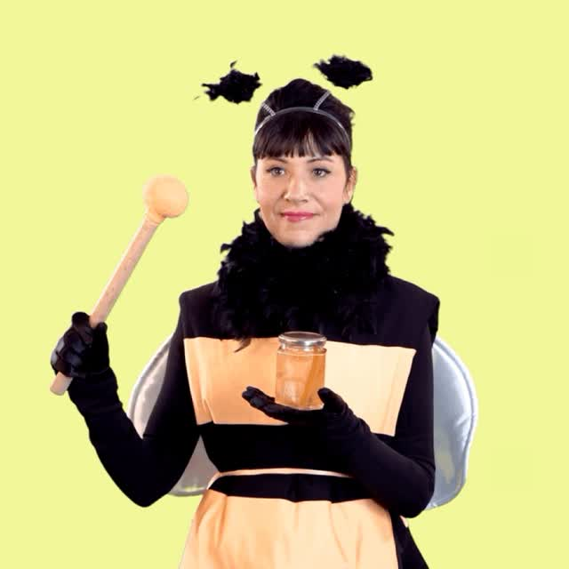
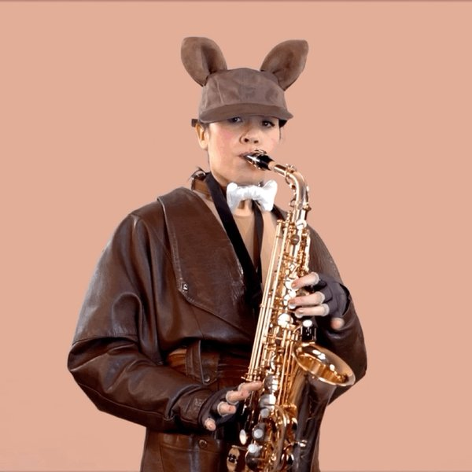

Spectacles et ciné-chansons pour les enfants.


Concert électro-pop pour les enfants, dès 3 ans.
Ciné-concert de 30 minutes pour les 0-3 ans, avec cinq courts films d’oiseaux. Diffusé par Gommette Production.
Concert-conte.
 Menu
Menu